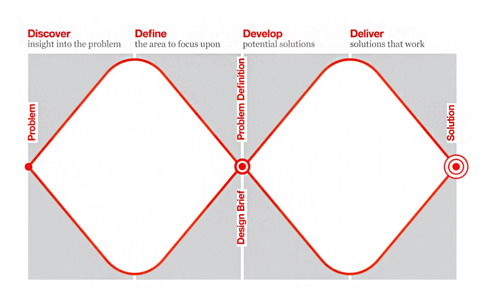

Project Context
Dear Digital Equity is a quarter-long project by the Interactive Media Design junior cohort at the University of Washington led by professors Dr. Dharma Dailey and Dr. Mark Chen. The cohort collaborated with digital equity advocates Sabrina Roach and Nancy Chang to create a website containing profiles of 23 digital equity advocates interviewed directly by each student. Students also individually created "explainers" for digital equity, as well as a blog post connecting the concepts of design and digital equity. The goal of the website was to bring awareness to the work being done by digital equity advocates in Washington State and encourage our audience to interact with and learn about the fight for digital inclusion.
Problem Statement
There is currently a significant digital gap in Washington State with a number of people not having access to affordable internet and devices necessary to participate in modern society. Digital equity advocates and organizations are working to change the current situation by creating programs to assist people and introducing bills to promote digital inclusion. Many of us in the cohort had never heard of the movement prior to the course, making us realize how under-appreciated the work being done is. We felt that through the creation of a website featuring digital equity advocates and their accomplishments, we could bring awareness to the digital inclusion efforts in Washington. We also hoped to help people already working in the field to learn about and get connected with others doing the same work.
Design Process
Throughout the course, we closely followed the Double Diamond design process
designed by the British Design Council in 2005. The model consists of four steps: “discover,” “define,”
“develop,” and “deliver.” 
At the start of our project, the cohort was split into groups to cover different parts of the design
process. I was assigned to be part of the branding team along with Alex Hochhalter, Li Tang, and Maraki
Yewondwossen. We were tasked with guiding the cohort through the decision making for our website's
theme and logo.
Following the first step of the Double Diamond model, we began our process by researching the web page
formats used by digital equity organizations, digital equity initiatives, etc. We compiled screenshots
taken from these websites to look for commonly used themes, trends, and other elements that we could
take inspiration from for our website. We closely looked at colors, fonts, and logos used for each
webpage.
Sabrina Roach, one of our collaborators, came to be interviewed with the cohort soon after to help us
with the research stage. Our group asked for advice and suggestions for branding and whether there are
any organizations/projects that we could look at for inspiration. We took note of her responses and
created a document to compile links of websites she mentioned as well as the advice she provided.
After we had finished the “discover” step, Dr. Dailey tasked groups with creating a facilitation guide
to help the class “define” what to focus on based on the research we had done. The branding group
decided to create a guideline document to give everyone in the cohort an opportunity to design a logo
to represent our brand.
For the first section of the document, we wrote a “branding vision” to give an overview of our project goal as well
as the branding team's goal. We listed advice provided by Sabrina Roach and Nancy Chang for people to look at, as
well as the links to different organizations/projects we found that could be a good place for inspiration. We made
sure to add a timeline for when we expect logos to be submitted by and noted a date on which we would have a class
discussion on the submissions we receive. The document was sent out to our cohort through Slack which was our
main communication tool.
After receiving logo submissions through email, the branding team created a powerpoint presentation for the class
discussion. The presentation started off with a slide to remind everybody of the branding vision, then a slide
with a list of questions to consider when discussing the submitted logos on the following slides.
At the end of the discussion, we came to the conclusion that the far left logo (shown above) would best fit our
branding vision for the website. We took notes on suggestions that were given out by the class such as editing the
sizing, adding color, and other accessibility issues.
The branding team produced multiple versions of the logo whilst asking for feedback and making improvements.
A variation of color themes and fonts were experimented with to see which would look most appropriate. We
decided on a purple palette which may have been inspired by the University of Washington's school colors. The branding team successfully helped the class determine (“define”) an official logo to represent our brand as well as a color palette and font for the website. After this step had been completed, we moved onto “developing” our individual deliverables apart from groups. The first deliverable we were to work on was the creation of a profile for a digital equity advocate of our choice. Based on a sheet consisting of a list of advocates and their organizations created beforehand, each student chose an advocate to reach out to and schedule an interview with. While I was unable to find a date to interview the first two advocates I contacted, I was able to schedule a day to meet with Merrill Jeffery, a Digital Navigation Services Manager for the Goodwill of the Olympics & Rainier Region organization.
After the meeting, I created a transcript of Merrill's responses and compiled it all into a file to fix any
grammatical errors. I then began working on his profile using a template created by Kim Ilinon (a classmate)
and used the transcript to fill out the section which would contain his responses under the profile. The profile was shared with the advocate so that they may make any changes before it is officially uploaded to the
website. Merrill had made quite a few edits to it, so I took all of it into account before finalizing it. For the final deliverable, we were asked to create a blog post connecting “design” and an aspect of digital equity
which we found interesting. I decided that I would be able to draw a lot of connections between the Double Diamond
design model which we had been closely working with throughout the quarter and digital equity organizations. As
someone who is working toward becoming a designer that creates “good” designs for users that can improve their
lives, I found that many digital equity advocates think the same way. They also wish to “design” programs and
opportunities for people who are in need, so that they can improve their daily lives. I wrote about this
similarity I noticed in the blog post and sent it in for revision. After making a few edits based on
suggestions I received from my professors, I submitted the final version to be uploaded.
Dr. Dailey had created a document with interview questions to ask for everyone, allowing the meeting to go smoothly. I met with Merrill over Zoom and had my classmate, Lars Vik, act as a note taker for the interview. The questions we asked the advocates were the following:
The next deliverable we were tasked to create was an “explainer” for a topic of digital equity. We were free to
create any type of media we wished for this assignment, and I decided that a blog post would be something that I
would enjoy creating. For my topic, I chose to create an explainer on the work digital equity advocates are doing
in Washington State to support students and their education. I did research on the statistics of students unable
to afford internet or devices, how the pandemic affected the participation rates for classes, and the
organizations and programs available to people in need. I created a draft of the formatting for the blog and
met with Dr. Dailey to make sure that I was on the right track. After getting my draft approved, I worked on
writing something that would be informative and interesting to anybody interested in the topic of digital
inclusion and education. I made sure to cite my sources at the end of the blog in case anyone wished to view
the organizations and programs I had referenced.
Final Design
We launched deardigitalequity.org on December 8th featuring all of the deliverables created
throughout the quarter. We invited advocates to a Zoom presentation hosted by the cohort to hear about the
project and the process we had taken to achieve the final product. I had the opportunity to represent the
branding team and speak on our design process.